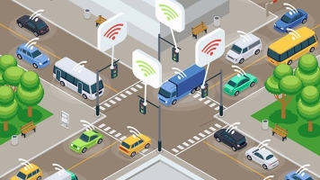

Tehnologije koje oblikuju našu budućnost
Pametni gradovi koriste tehnologije za poboljšanje kvalitete života svojih građana. To uključuje pametne prometne sisteme, energetski efikasna rješenja i održive prakse. U gradovima kao što su Barcelona i Singapur, tehnologije kao što su IoT (Internet of Things) i velika analitika podataka pomažu u stvaranju učinkovitijeg urbanog prostora.
Ova rješenja omogućavaju optimizaciju javnog prijevoza, smanjenje zagađenja i povećanje sigurnosti kroz pametne tehnologije, a u nastavku možete pročitati koje sve tehnologije oni koriste kako bi to postigli.
Pametni gradovi koriste razne tehnologije kako bi poboljšali život svojih građana. Evo nekoliko ključnih tehnologija:
| Internet stvari (IoT) | Veliki podaci |
| Umjetna inteligencija (AI) |  Pametni prometni sistemi |